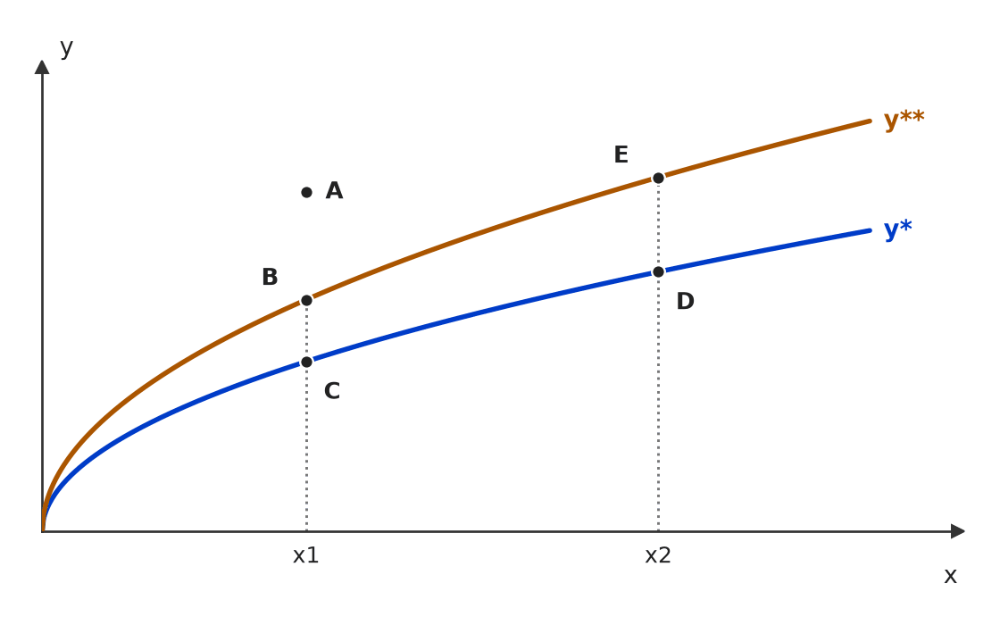
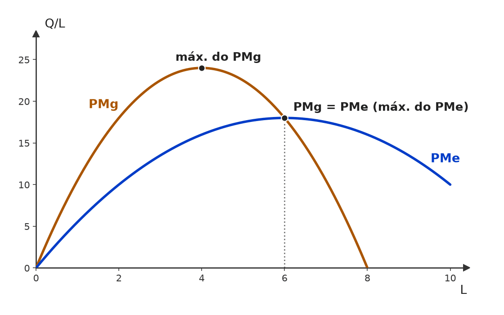
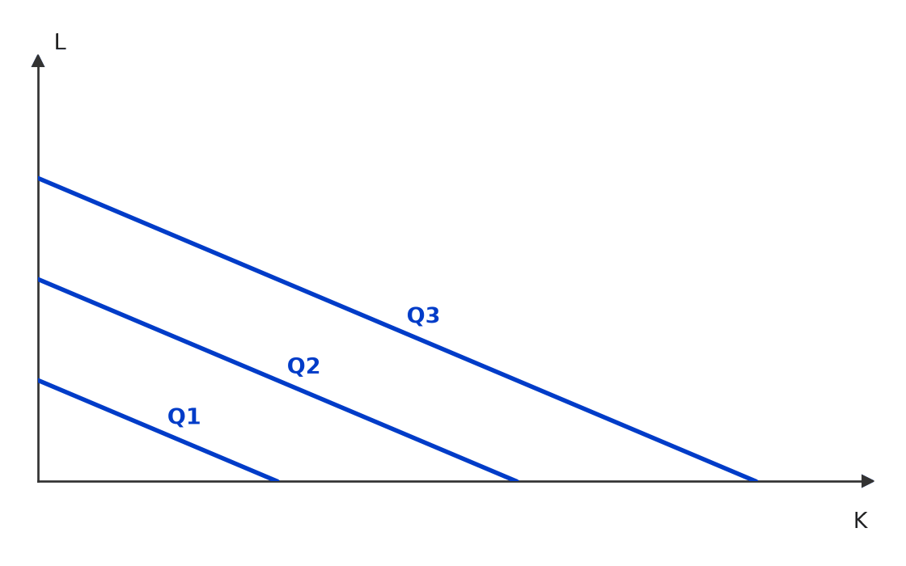
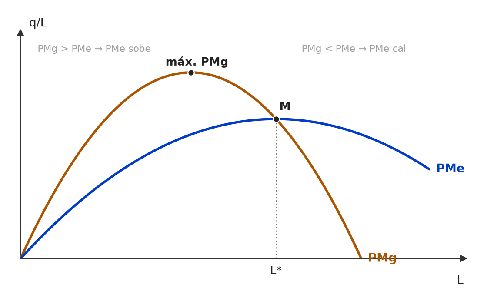
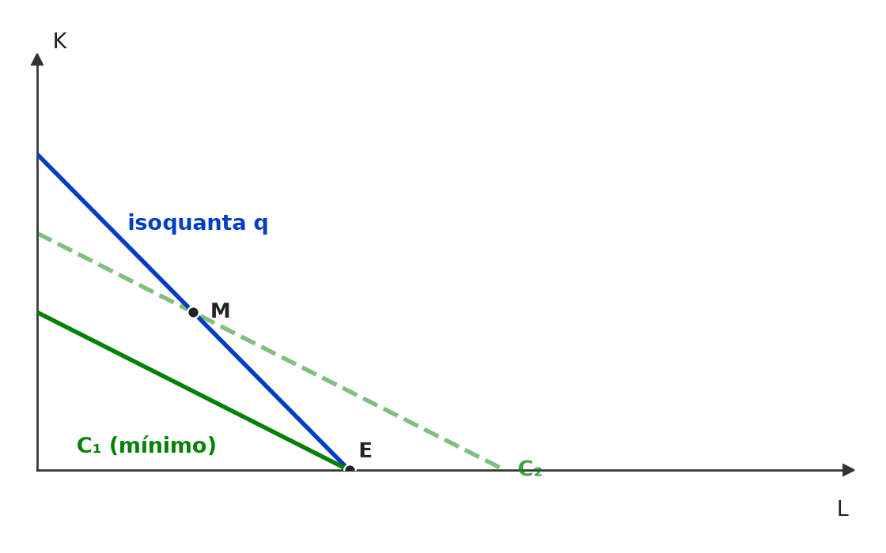
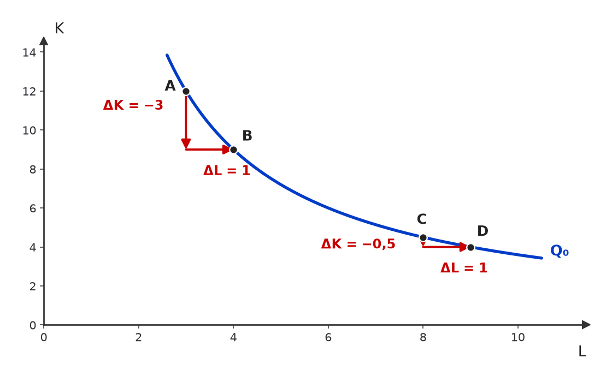
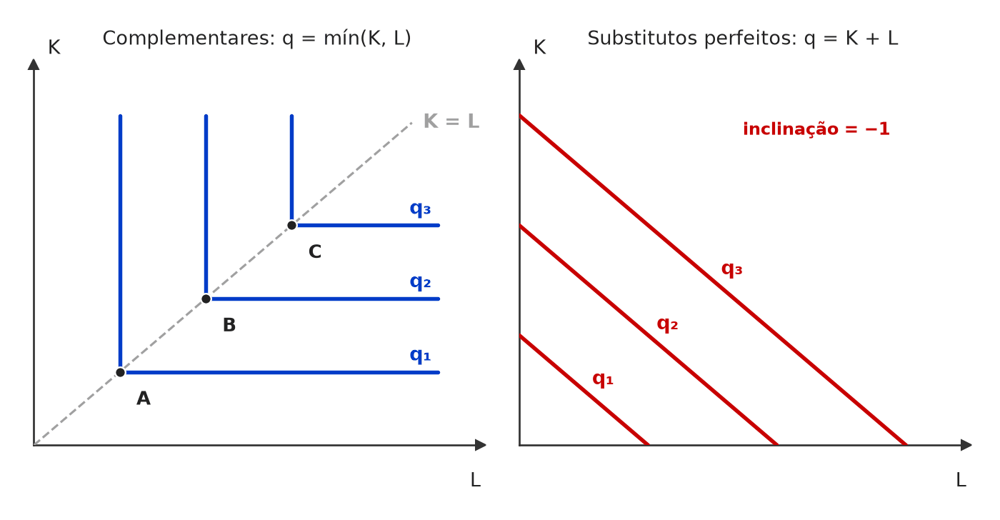
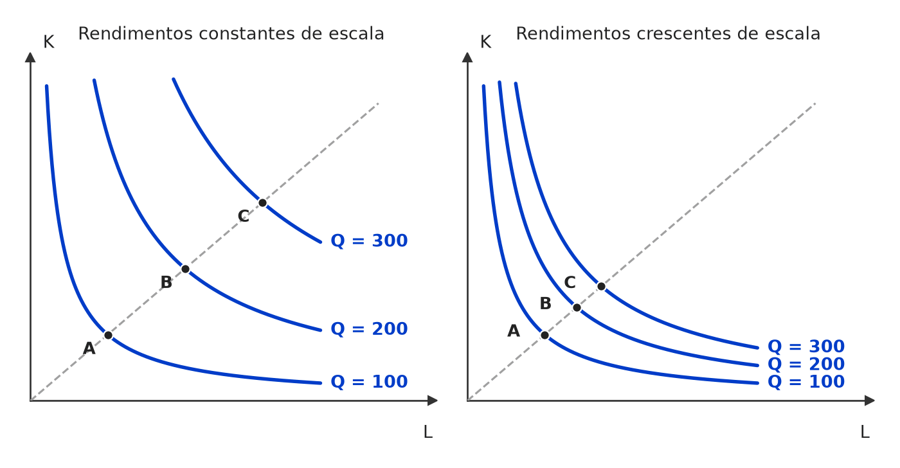

❌ [C/E - CEBRASPE › ANA/Especialista em Regulação/2024 › Função de produção e curto prazo]Considerando a figura a seguir, que representa duas funções de produção, y* e y**, que relacionam a quantidade de insumo (x) à quantidade produzida (y), julgue o item.  Funções de produção y* e y** (insumo x no eixo horizontal; produto y no vertical). (figura redesenhada; traçado aproximado) (figura redesenhada; traçado aproximado) Item: A produtividade no ponto B é maior que no ponto C, pois o ponto B encontra-se em um padrão tecnológico superior. | ✅ CERTO A produtividade no ponto B é maior que no ponto C, pois o ponto B encontra-se em um padrão tecnológico superior. 🎯 Em poucas palavras: B e C usam a mesma quantidade de insumo (x1), mas B produz mais: y/x maior. Isso porque B está sobre y**, a função de produção de tecnologia superior. 📖 Destrinchando o tema:
🧐 Dissecando a redação do item: [paráfrase fiel] Comparação na mesma vertical (mesmo x): a única diferença entre B e C é a curva, isto é, a tecnologia. O risco é confundir produção com produtividade quando a banca compara pontos com insumos diferentes. 😈 Para dificultar:
|
[C/E - IDEG – Prof. Bozan › Pré-TPS/2026 › Função de produção e curto prazo]Considere as características da produção no curto e no longo prazo, bem como as escolhas do produtor em diferentes cenários. Julgue o item a seguir conforme esse contexto. Item: No curto prazo, a empresa pode aumentar sua produção aumentando proporcionalmente todos os seus fatores de produção, levando a um aumento proporcional na produção total, sem interferir nos rendimentos decrescentes. | ❌ ERRADO No curto prazo, a empresa pode aumentar sua produção aumentando proporcionalmente todos os seus fatores de produção, levando a um aumento proporcional na produção total, sem interferir nos rendimentos decrescentes. 🎯 Em poucas palavras: No curto prazo há ao menos um fator fixo: não dá para aumentar todos os fatores. A produção sobe só pelo fator variável, sujeita aos rendimentos marginais decrescentes. 📖 Destrinchando o tema:
🧐 Dissecando a redação do item: [troca de conceito · anacronismo] O item transplanta para o curto prazo a definição de rendimentos de escala, que é de longo prazo. O fecho “sem interferir nos rendimentos decrescentes” é a pista: no curto prazo, eles são inevitáveis. 😈 Para dificultar:
✍️ Reescrita correta: No curto prazo, a empresa pode aumentar sua produção apenas aumentando os fatores variáveis, pois ao menos um fator permanece fixo, o que a sujeita, a partir de certo ponto, aos rendimentos marginais decrescentes. |
❌ [C/E - Nidi/Jacqueline Bueno › Outubro/2024 › Função de produção e curto prazo]As teorias do consumidor e do produtor são fundamentais para compreender como agentes econômicos tomam decisões racionais em condições de escassez [...]. Considerando essas teorias básicas da microeconomia e os conceitos que elas envolvem, julgue certo ou errado (C ou E) o item a seguir. Item: O axioma da transitividade na teoria do consumidor, que afirma que se um consumidor prefere o bem A ao bem B e prefere o bem B ao bem C, ele também prefere o bem A ao bem C, possui uma contraparte na teoria do produtor, segundo a qual a produção com uma combinação de insumos mais eficiente sempre é preferida pelo produtor, respeitando a lógica de eficiência técnica. | ✅ CERTO O axioma da transitividade na teoria do consumidor, que afirma que se um consumidor prefere o bem A ao bem B e prefere o bem B ao bem C, ele também prefere o bem A ao bem C, possui uma contraparte na teoria do produtor, segundo a qual a produção com uma combinação de insumos mais eficiente sempre é preferida pelo produtor, respeitando a lógica de eficiência técnica. 🎯 Em poucas palavras: A transitividade garante uma ordenação coerente das cestas. No produtor, o papel equivalente cabe à ordenação por eficiência técnica: entre combinações que produzem o mesmo, a que usa menos insumo domina — e essa dominância também é transitiva. 📖 Destrinchando o tema:
🧐 Dissecando a redação do item: [paráfrase fiel · contraintuitivo] Item abstrato e longo, que parece forçar uma analogia. O “sempre” assusta, mas aqui é legítimo: uma combinação mais eficiente (dominante) nunca pode ser pior para a firma. Moral: modulador absoluto não é erro automático — teste se a afirmação admite exceção. 😈 Para dificultar:
|
[C/E - Nabuco › Pré-TPS/2023 › Função de produção e curto prazo]Em relação à teoria da produção e dos custos e aos conceitos de curto prazo e longo prazo, julgue o item a seguir. Item: O curto prazo é um período de tempo no qual pelo menos um fator de produção é fixo. No longo prazo a empresa pode alterar a quantidade de qualquer fator utilizado na produção. | ✅ CERTO O curto prazo é um período de tempo no qual pelo menos um fator de produção é fixo. No longo prazo a empresa pode alterar a quantidade de qualquer fator utilizado na produção. 🎯 Em poucas palavras: As duas definições estão corretas: curto prazo = ao menos um fator fixo; longo prazo = tempo suficiente para que todos os fatores se tornem variáveis. 📖 Destrinchando o tema:
🧐 Dissecando a redação do item: [literalidade] Duas definições de manual encadeadas; os moduladores “pelo menos um” e “qualquer” são os pontos que a banca costuma adulterar (“todos os fatores fixos”, “apenas o capital varia”). 😈 Para dificultar:
|
[C/E - Banca não identificada › Função de produção e curto prazo]Julgue o item a seguir, acerca dos horizontes de curto e de longo prazo na teoria da produção. Item: Curto prazo é o período em que pelo menos um dos fatores de produção permanece constante ou fixo. | ✅ CERTO Curto prazo é o período em que pelo menos um dos fatores de produção permanece constante ou fixo. 🎯 Em poucas palavras: É a definição de manual: no curto prazo há ao menos um fator fixo; no longo prazo, todos são variáveis. 📖 Destrinchando o tema:
🧐 Dissecando a redação do item: [literalidade] Reproduz a definição, e o ponto de risco é o “pelo menos um”: a banca costuma trocá-lo por “todos” (ERRADO) ou por um prazo em meses. 😈 Para dificultar:
|
[C/E - Banca não identificada › Função de produção e curto prazo]Julgue o item a seguir, acerca dos horizontes de curto e de longo prazo na teoria da produção. Item: No longo prazo, uma firma pode variar seu insumo capital mas não seu insumo mão de obra. | ❌ ERRADO No longo prazo, uma firma pode variar seu insumo capital mas não seu insumo mão de obra. 🎯 Em poucas palavras: No longo prazo todos os insumos são variáveis — capital e mão de obra. O item cria uma restrição que não existe. 📖 Destrinchando o tema:
🧐 Dissecando a redação do item: [restrição indevida · inversão] A restrição “mas não seu insumo mão de obra” é falsa em qualquer leitura: no longo prazo nada é fixo e, no curto prazo usual, o fixo é o capital, não o trabalho. Pista: qualquer limitação a insumos no “longo prazo” é ERRADO. 😈 Para dificultar:
✍️ Reescrita correta: No longo prazo, uma firma pode variar seu insumo capital e também seu insumo mão de obra. |
[C/E - FGV › Câmara Municipal de São Paulo/Consultor Técnico Legislativo/2024 › Produto marginal e rendimentos]Julgue o item a seguir, relativo à teoria da produção (questão adaptada). Item: O produto médio atinge seu nível máximo no ponto em que iguala com a produtividade marginal. | ✅ CERTO O produto médio atinge seu nível máximo no ponto em que iguala com a produtividade marginal. 🎯 Em poucas palavras: Enquanto o produto marginal está acima do produto médio, cada trabalhador extra puxa a média para cima; quando fica abaixo, puxa para baixo. Logo, o PMg corta o PMe exatamente no máximo do PMe. 📖 Destrinchando o tema:
📈 No gráfico:  Enquanto o PMg está acima do PMe, cada trabalhador extra puxa a média para cima; quando o PMg cai abaixo, puxa para baixo. Por isso o PMg corta o PMe exatamente no máximo do PMe (L = 6). 🧐 Dissecando a redação do item: [literalidade] O item reproduz a regra de manual, com redação truncada (“iguala com”). O risco é confundir com o máximo do PMg, que vem antes, ou com PMg = 0, que marca o máximo do produto total. 🔥 Bancas costumam trocar qual curva está no máximo. 😈 Para dificultar:
|
[C/E - IDEG – Prof. Bozan › Pré-TPS/2026 › Produto marginal e rendimentos]Considere as características da produção no curto e no longo prazo, bem como as escolhas do produtor em diferentes cenários. Julgue o item a seguir conforme esse contexto. Item: A lei dos rendimentos decrescentes, observada no curto prazo, implica que, adicionando mais unidades de um fator variável enquanto outros são mantidos fixos, a produtividade marginal desse fator diminui eventualmente. | ✅ CERTO A lei dos rendimentos decrescentes, observada no curto prazo, implica que, adicionando mais unidades de um fator variável enquanto outros são mantidos fixos, a produtividade marginal desse fator diminui eventualmente. 🎯 Em poucas palavras: É o enunciado da lei dos rendimentos marginais decrescentes: com fatores fixos, o produto marginal do fator variável cai a partir de certo ponto. 📖 Destrinchando o tema:
🧐 Dissecando a redação do item: [literalidade · modulador relativo] O item é a definição de manual. O risco está no “eventualmente” (leia-se “a partir de certo ponto”) e em “marginal”: a banca costuma trocar por “total” ou “desde a primeira unidade” para fabricar o ERRADO. 😈 Para dificultar:
|
[C/E - Nabuco › Pré-TPS/2023 › Produto marginal e rendimentos]Considere uma função de produção que utilize capital (K) e trabalho (L), estando as isoquantas dessa produção (Q) descritas na figura apresentada. A partir desses dados, julgue o item.  Isoquantas (Q) da função de produção com capital (K) e trabalho (L). (figura redesenhada; traçado aproximado) (figura redesenhada; traçado aproximado) Item: A função de produção em questão respeita a lei dos rendimentos marginais decrescentes. | ❌ ERRADO A função de produção em questão respeita a lei dos rendimentos marginais decrescentes. 🎯 Em poucas palavras: Isoquantas retas e igualmente espaçadas = substitutos perfeitos (Q = aK + bL): o produto marginal de cada fator é constante, não decrescente. 📖 Destrinchando o tema:
🧐 Dissecando a redação do item: [troca de conceito] O item empresta uma “lei” geral da microeconomia e a aplica a uma tecnologia que é justamente a exceção. Pista visual: retas. 🔥 A banca pede no mesmo bloco escala (CERTO aqui) e rendimento marginal (ERRADO). 😈 Para dificultar:
✍️ Reescrita correta: A função de produção em questão não respeita a lei dos rendimentos marginais decrescentes: os produtos marginais de K e de L são constantes. |
[C/E - Nabuco › Pré-TPS/2023 › Produto marginal e rendimentos]Em relação à teoria da produção e dos custos e aos conceitos de curto prazo e longo prazo, julgue o item a seguir. Item: Em uma firma que opera com capital constante no curto prazo, aumento na quantidade de trabalho faz que o produto marginal e o produto médio do trabalho cresçam e depois tendam a cair. Nesse processo, enquanto o produto médio cresce, o produto marginal é maior que o médio; e, enquanto o produto médio diminui, o produto marginal é menor que o produto médio. | ✅ CERTO Em uma firma que opera com capital constante no curto prazo, aumento na quantidade de trabalho faz que o produto marginal e o produto médio do trabalho cresçam e depois tendam a cair. Nesse processo, enquanto o produto médio cresce, o produto marginal é maior que o médio; e, enquanto o produto médio diminui, o produto marginal é menor que o produto médio. 🎯 Em poucas palavras: É a relação marginal × média: se a unidade nova rende mais que a média, puxa a média para cima; se rende menos, puxa para baixo. Por isso o PMg corta o PMe no máximo do PMe. 📖 Destrinchando o tema:
📈 No gráfico:  Com o capital fixo, PMg e PMe do trabalho sobem e depois caem. Enquanto PMg > PMe, cada trabalhador novo puxa a média para cima; quando PMg < PMe, puxa para baixo. Por isso PMg corta PMe exatamente no máximo de PMe (ponto M). 🧐 Dissecando a redação do item: [literalidade · detalhe] Reproduz o resultado de manual. O risco está na ordem das comparações: a banca inverte “maior” e “menor” ou afirma que o PMg corta o PMe no máximo do PMg. 😈 Para dificultar:
|
[C/E - Nabuco › Pré-TPS/2023 › Produto marginal e rendimentos]Em relação à teoria da produção e dos custos e aos conceitos de curto prazo e longo prazo, julgue o item a seguir. Item: A lei dos retornos marginais decrescentes afirma que o produto total cai à medida que mais do insumo é adicionado à produção. | ❌ ERRADO A lei dos retornos marginais decrescentes afirma que o produto total cai à medida que mais do insumo é adicionado à produção. 🎯 Em poucas palavras: O que decresce é o produto marginal (o acréscimo de produção de cada nova unidade), não o produto total, que continua subindo enquanto PMg > 0. 📖 Destrinchando o tema:
🧐 Dissecando a redação do item: [troca de conceito] Troca marginal por total — o mesmo erro de quem confunde “crescer menos” com “diminuir”. Pista: a palavra “marginais” está no nome da lei. 😈 Para dificultar:
✍️ Reescrita correta: A lei dos retornos marginais decrescentes afirma que o produto marginal cai à medida que mais do insumo é adicionado à produção. |
❌ [C/E - FGV › Câmara Municipal de São Paulo/Consultor Técnico Legislativo/2024 › Isoquantas e TMST]Julgue o item a seguir, relativo à teoria da produção (questão adaptada). Item: A taxa marginal de substituição técnica entre dois bens é igual a razão de suas produtividades marginais. | ❌ ERRADO A taxa marginal de substituição técnica entre dois bens é igual a razão de suas produtividades marginais. 🎯 Em poucas palavras: A TMST é definida entre dois fatores de produção (insumos), ao longo da isoquanta. Entre dois bens, as taxas são outras: a TMS do consumidor ou a TMT da fronteira de possibilidades de produção. 📖 Destrinchando o tema:
🧐 Dissecando a redação do item: [troca de conceito] Todo o resto é literal; o erro está numa única palavra: “bens” no lugar de “fatores de produção”. Pista: “produtividades marginais” só existem para insumos. 🔥 Trocar bens × fatores e utilidade × produção é clássico de FGV e CEBRASPE. 😈 Para dificultar:
✍️ Reescrita correta: A taxa marginal de substituição técnica entre dois fatores de produção é igual à razão de suas produtividades marginais. |
[C/E - IADES › GDF/SEEC/Gestor/2023 › Isoquantas e TMST]Julgue o item a seguir, relativo à teoria da produção. Item: Uma função de produção de proporções fixas apresenta elasticidade de substituição nula entre os insumos. | ✅ CERTO Uma função de produção de proporções fixas apresenta elasticidade de substituição nula entre os insumos. 🎯 Em poucas palavras: Em proporções fixas (Leontief), a razão K/L não muda, por mais que mudem os preços relativos: σ = 0. 📖 Destrinchando o tema:
🧐 Dissecando a redação do item: [literalidade] Definição direta. A banca troca “nula” por “infinita” (que é a dos substitutos perfeitos) ou por “unitária” (Cobb-Douglas). 😈 Para dificultar:
|
❌ [C/E - IADES › GDF/SEEC/Gestor/2023 › Isoquantas e TMST]Julgue o item a seguir, relativo à teoria da produção. Item: Caso o mapa de isoquantas seja composto por isoquantas lineares, a produção ótima ocorrerá com o uso combinado de todos os insumos necessariamente. | ❌ ERRADO Caso o mapa de isoquantas seja composto por isoquantas lineares, a produção ótima ocorrerá com o uso combinado de todos os insumos necessariamente. 🎯 Em poucas palavras: Com isoquantas lineares (substitutos perfeitos), o ótimo costuma ser uma solução de canto: a firma usa só o insumo que rende mais produto por real gasto. 📖 Destrinchando o tema:
📈 No gráfico:  Isoquanta reta (substitutos perfeitos, TMST = 2) mais inclinada que a isocusto (w/r = 1): o menor custo é o canto E, só com trabalho. Uma combinação com os dois insumos, como M, exige isocusto mais alta (C₂). 🧐 Dissecando a redação do item: [modulador absoluto] A palavra que derruba o item é “necessariamente”. Quem decorou “ótimo = tangência com os dois insumos” (o caso convexo) cai. 🔥 Isoquanta reta quase sempre vem acompanhada de pergunta sobre solução de canto. 😈 Para dificultar:
✍️ Reescrita correta: Caso o mapa de isoquantas seja composto por isoquantas lineares, a produção ótima poderá ocorrer com o uso de um único insumo (solução de canto), e não necessariamente com o uso combinado de todos os insumos. |
[C/E - IDEG – Prof. Bozan › Pré-TPS/2026 › Isoquantas e TMST]Considere as características da produção no curto e no longo prazo, bem como as escolhas do produtor em diferentes cenários. Julgue o item a seguir conforme esse contexto. Item: As isoquantas, no longo prazo, representam combinações de fatores de produção que resultam no mesmo nível de produção, permitindo ao produtor variar capital e trabalho na busca de eficiência de custos. | ✅ CERTO As isoquantas, no longo prazo, representam combinações de fatores de produção que resultam no mesmo nível de produção, permitindo ao produtor variar capital e trabalho na busca de eficiência de custos. 🎯 Em poucas palavras: Isoquanta = combinações de K e L com o mesmo produto. No longo prazo, com os dois fatores livres, a firma escolhe, sobre ela, a combinação de menor custo. 📖 Destrinchando o tema:
🧐 Dissecando a redação do item: [paráfrase fiel] Junta a definição de isoquanta com sua função no longo prazo; nada a corrigir. A troca típica da banca é “mesmo custo” no lugar de “mesmo nível de produção” — aí seria a isocusto. 😈 Para dificultar:
|
[C/E - Nidi/Jacqueline Bueno › Simulado Dezembro/2024 › Isoquantas e TMST]Considerando a teoria da produção e suas implicações para o equilíbrio de curto e longo prazo para empresas competitivas, julgue (C ou E) o item a seguir. Item: A curvatura da isoquanta é medida por sua inclinação em cada ponto, que representa a taxa à qual os dois insumos podem ser substituídos mantendo-se a produção constante. Esta taxa é chamada de taxa marginal de substituição técnica e, ao longo de uma isoquanta típica, ela diminui para o fator que está se tornando relativamente mais abundante à medida que nos movemos para os extremos. | ✅ CERTO A curvatura da isoquanta é medida por sua inclinação em cada ponto, que representa a taxa à qual os dois insumos podem ser substituídos mantendo-se a produção constante. Esta taxa é chamada de taxa marginal de substituição técnica e, ao longo de uma isoquanta típica, ela diminui para o fator que está se tornando relativamente mais abundante à medida que nos movemos para os extremos. 🎯 Em poucas palavras: A inclinação da isoquanta é a TMST; na isoquanta convexa típica, ela decresce: o fator que vai ficando abundante consegue substituir cada vez menos do fator que vai ficando escasso. 📖 Destrinchando o tema:
📈 No gráfico:  Na mesma isoquanta, de A para B uma unidade de L substitui 3 de K (TMST = 3); de C para D, só 0,5 de K (TMST = 0,5). Quanto mais abundante o trabalho, menos capital ele consegue substituir: TMST decrescente = isoquanta convexa. 🧐 Dissecando a redação do item: [paráfrase fiel · detalhe] O item parafraseia a definição de manual em frase longa e com uma imprecisão (“curvatura medida pela inclinação”) que pode levar o candidato a marcar ERRADO por excesso de rigor. O que decide é o comportamento da TMST ao longo da curva: “diminui” está certo. 😈 Para dificultar:
|
[C/E - Nidi/Jacqueline Bueno › Outubro/2024 › Isoquantas e TMST]As teorias do consumidor e do produtor são fundamentais para compreender como agentes econômicos tomam decisões racionais em condições de escassez [...]. Considerando essas teorias básicas da microeconomia e os conceitos que elas envolvem, julgue certo ou errado (C ou E) o item a seguir. Item: A Taxa Marginal de Substituição (TMS) para o consumidor indica a relação entre as quantidades de dois bens que um indivíduo está disposto a trocar para manter o mesmo nível de utilidade e é análoga à Taxa Marginal de Substituição Técnica (TMST) do produtor, que reflete a relação entre os insumos que o produtor pode substituir, mantendo o mesmo nível de produção. | ✅ CERTO A Taxa Marginal de Substituição (TMS) para o consumidor indica a relação entre as quantidades de dois bens que um indivíduo está disposto a trocar para manter o mesmo nível de utilidade e é análoga à Taxa Marginal de Substituição Técnica (TMST) do produtor, que reflete a relação entre os insumos que o produtor pode substituir, mantendo o mesmo nível de produção. 🎯 Em poucas palavras: As duas são taxas de troca na margem que mantêm algo constante — utilidade (TMS, curva de indiferença) ou produção (TMST, isoquanta). A analogia é a estrutura comum das teorias do consumidor e da firma. 📖 Destrinchando o tema:
🧐 Dissecando a redação do item: [paráfrase fiel] Item longo e sem armadilha de conteúdo: descreve corretamente as duas taxas e afirma só a analogia. Ele viraria ERRADO se trocasse os objetos (TMST entre bens; TMS entre insumos) ou se dissesse que os conceitos são idênticos ou que a utilidade é mensurável como a produção. 🧭 Panorama:
😈 Para dificultar:
|
❌ [C/E - Nidi/Jacqueline Bueno › Outubro/2024 › Isoquantas e TMST]As teorias do consumidor e do produtor são fundamentais para compreender como agentes econômicos tomam decisões racionais em condições de escassez [...]. Considerando essas teorias básicas da microeconomia e os conceitos que elas envolvem, julgue certo ou errado (C ou E) o item a seguir. Item: Um produtor racional sempre escolhe uma combinação de fatores de produção localizada em uma curva de indiferença mais alta, pois curvas de indiferença mais baixas representam menores níveis de produção. | ❌ ERRADO Um produtor racional sempre escolhe uma combinação de fatores de produção localizada em uma curva de indiferença mais alta, pois curvas de indiferença mais baixas representam menores níveis de produção. 🎯 Em poucas palavras: Dois erros: o produtor trabalha com isoquantas, não com curvas de indiferença; e não escolhe “sempre a mais alta”, mas a isoquanta mais alta que sua isocusto alcança (ou a isocusto mais baixa para um dado produto). 📖 Destrinchando o tema:
🧐 Dissecando a redação do item: [troca de conceito · modulador absoluto] O item transplanta o vocabulário do consumidor para a firma e retira a restrição de custo com o “sempre”. Pista imediata: “curva de indiferença” e “níveis de produção” na mesma frase não combinam. 🔥 Simulados do CACD gostam dessa troca de rótulos entre as duas teorias. 🧠 Mnemônico:
😈 Para dificultar:
✍️ Reescrita correta: Um produtor racional escolhe, dada a sua isocusto, uma combinação de fatores de produção localizada na isoquanta mais alta alcançável, pois isoquantas mais baixas representam menores níveis de produção. |
[C/E - Nabuco › Pré-TPS/2023 › Isoquantas e TMST]Considere uma função de produção que utilize capital (K) e trabalho (L), estando as isoquantas dessa produção (Q) descritas na figura apresentada. A partir desses dados, julgue o item. Isoquantas (Q) da função de produção com capital (K) e trabalho (L). (figura redesenhada; traçado aproximado) (figura redesenhada; traçado aproximado) Item: As isoquantas apresentadas representam o capital e o trabalho como substitutos perfeitos na produção. | ✅ CERTO As isoquantas apresentadas representam o capital e o trabalho como substitutos perfeitos na produção. 🎯 Em poucas palavras: Isoquanta reta = TMST constante: capital e trabalho se trocam sempre à mesma taxa, qualquer que seja a combinação — definição de substitutos perfeitos. 📖 Destrinchando o tema:
🧐 Dissecando a redação do item: [literalidade] Leitura direta do formato: reta = substitutos perfeitos. A banca costuma inverter para “complementares perfeitos” (ERRADO) ou cobrar a TMST “decrescente” (ERRADO: é constante). 😈 Para dificultar:
|
[C/E - Nabuco › Pré-TPS/2023 › Isoquantas e TMST]Considere uma função de produção que utilize capital (K) e trabalho (L), estando as isoquantas dessa produção (Q) descritas na figura apresentada. A partir desses dados, julgue o item. Isoquantas (Q) da função de produção com capital (K) e trabalho (L). (figura redesenhada; traçado aproximado) (figura redesenhada; traçado aproximado) Item: A taxa marginal de substituição técnica em cada ponto da isoquanta corresponde à quantidade de capital que pode ser substituída por determinada quantidade de trabalho com o objetivo de aumentar a produção. | ❌ ERRADO A taxa marginal de substituição técnica em cada ponto da isoquanta corresponde à quantidade de capital que pode ser substituída por determinada quantidade de trabalho com o objetivo de aumentar a produção. 🎯 Em poucas palavras: Sobre uma isoquanta (Q1, Q2 ou Q3) o produto é constante. A TMST mede a troca entre K e L que mantém a produção; para aumentá-la, é preciso passar a uma isoquanta mais alta. 📖 Destrinchando o tema:
🧐 Dissecando a redação do item: [meia-verdade · troca de conceito] A definição está certa até “trabalho”; o erro é o objetivo enxertado no fim. 🔥 Assertiva idêntica aparece em outro bloco Nabuco sobre teoria da firma — mesmo gabarito. 😈 Para dificultar:
✍️ Reescrita correta: A taxa marginal de substituição técnica em cada ponto da isoquanta corresponde à quantidade de capital que pode ser substituída por determinada quantidade de trabalho mantendo-se constante a produção. |
[C/E - Daniel – Economia CACD (Telegram) › Isoquantas e TMST]Julgue o item a seguir, relativo às isoquantas e à taxa marginal de substituição técnica. Item: A taxa marginal de substituição técnica, TMST, mede a inclinação da isoquanta. Se os insumos são complementares perfeitos, as isoquantas são lineares. | ❌ ERRADO A taxa marginal de substituição técnica, TMST, mede a inclinação da isoquanta. Se os insumos são complementares perfeitos, as isoquantas são lineares. 🎯 Em poucas palavras: A 1ª frase está certa. Complementares perfeitos têm isoquantas em L; isoquantas lineares são as dos substitutos perfeitos. 📖 Destrinchando o tema:
🧐 Dissecando a redação do item: [troca de conceito] Frase 1 correta para dar confiança; o erro está no formato atribuído aos complementares, trocado com o dos substitutos. Pista: “complementares perfeitos” e “lineares” nunca andam juntos. 😈 Para dificultar:
✍️ Reescrita correta: A taxa marginal de substituição técnica, TMST, mede a inclinação da isoquanta. Se os insumos são complementares perfeitos, as isoquantas têm formato de L. |
❌ [C/E - Daniel – Economia CACD (Telegram) › Isoquantas e TMST]Julgue o item a seguir, relativo às isoquantas e à taxa marginal de substituição técnica. Item: Uma isoquanta representa todas as possíveis combinações de insumos que resultam no mesmo custo de produção. Sua inclinação descendente pode ser explicada pela taxa marginal de substituição técnica. | ❌ ERRADO Uma isoquanta representa todas as possíveis combinações de insumos que resultam no mesmo custo de produção. Sua inclinação descendente pode ser explicada pela taxa marginal de substituição técnica. 🎯 Em poucas palavras: Isoquanta = mesma quantidade produzida. A curva de mesmo custo é a isocusto. A 2ª frase está certa. 📖 Destrinchando o tema:
🧐 Dissecando a redação do item: [troca de conceito] Troca isoquanta por isocusto, curvas que aparecem juntas no mesmo gráfico. A 2ª frase, correta, serve de isca. Pista: o próprio nome entrega o conceito. 🧠 Mnemônico:
😈 Para dificultar:
✍️ Reescrita correta: Uma isoquanta representa todas as possíveis combinações de insumos que resultam na mesma quantidade produzida. Sua inclinação descendente pode ser explicada pela taxa marginal de substituição técnica. |
[C/E - Nabuco › Isoquantas e TMST]Em relação à teoria microeconômica, julgue o item a seguir. Item: Na função de produção do tipo Leontief, os fatores de produção são complementos perfeitos e não podem ser substituídos um pelo outro, independentemente do preço. | ✅ CERTO Na função de produção do tipo Leontief, os fatores de produção são complementos perfeitos e não podem ser substituídos um pelo outro, independentemente do preço. 🎯 Em poucas palavras: Leontief = proporções fixas: q = mín(K/a, L/b). Isoquantas em L, elasticidade de substituição zero — mudar preços relativos não muda a combinação usada. 📖 Destrinchando o tema:
🧐 Dissecando a redação do item: [literalidade] Definição direta. O trecho final (“independentemente do preço”) parece exagero, mas é exatamente o que distingue a Leontief: nenhuma variação de preço relativo induz substituição. 😈 Para dificultar:
|
[C/E - Nabuco › Isoquantas e TMST]Com relação à teoria da firma, julgue o item a seguir. Item: A taxa marginal de substituição técnica em cada ponto da isoquanta corresponde à quantidade de capital que pode ser substituída por determinada quantidade de trabalho com o objetivo de aumentar a produção. | ❌ ERRADO A taxa marginal de substituição técnica em cada ponto da isoquanta corresponde à quantidade de capital que pode ser substituída por determinada quantidade de trabalho com o objetivo de aumentar a produção. 🎯 Em poucas palavras: A TMST mede a troca entre insumos mantendo a produção constante — toda a isoquanta tem o mesmo nível de produto. Aumentar a produção exige mudar de isoquanta. 📖 Destrinchando o tema:
🧐 Dissecando a redação do item: [meia-verdade · troca de conceito] A primeira parte é a definição correta; o erro foi enxertado no objetivo da troca. 🔥 O mesmo item reaparece em outro simulado Nabuco, com um gráfico de isoquantas retas — o gabarito não muda. 😈 Para dificultar:
✍️ Reescrita correta: A taxa marginal de substituição técnica em cada ponto da isoquanta corresponde à quantidade de capital que pode ser substituída por determinada quantidade de trabalho mantendo-se constante a produção. |
[C/E - Nabuco › Isoquantas e TMST]Com relação à teoria da firma, julgue o item a seguir. Item: Considere que determinada firma tenha a função de produção de proporções fixas e que cada nível de produção exija uma combinação específica de trabalho e capital. Nessa situação, a taxa marginal de substituição técnica é constante em todos os pontos da isoquanta. | ❌ ERRADO Considere que determinada firma tenha a função de produção de proporções fixas e que cada nível de produção exija uma combinação específica de trabalho e capital. Nessa situação, a taxa marginal de substituição técnica é constante em todos os pontos da isoquanta. 🎯 Em poucas palavras: TMST constante em toda a isoquanta é marca dos substitutos perfeitos (retas). Em proporções fixas a isoquanta é um L: TMST nula num braço, infinita no outro e indefinida no vértice. 📖 Destrinchando o tema:
🧐 Dissecando a redação do item: [troca de conceito] O item confunde “proporção fixa” com “taxa de substituição constante”: fixa é a combinação; a TMST nem existe no vértice. Pista: “constante em todos os pontos” descreve uma reta. 😈 Para dificultar:
✍️ Reescrita correta: Considere que determinada firma tenha a função de produção de proporções fixas e que cada nível de produção exija uma combinação específica de trabalho e capital. Nessa situação, a taxa marginal de substituição técnica não é constante: é nula no trecho horizontal, infinita no trecho vertical e indefinida no vértice da isoquanta. |
[C/E - Nabuco › Isoquantas e TMST]Com relação à teoria da firma, julgue o item a seguir. Item: Supondo-se que, na produção de serviços de proteção ao meio ambiente, funcionários e material de escritório sejam fatores complementares, então, as isoquantas entre esses dois insumos são formadas por ângulos retos paralelos. | ✅ CERTO Supondo-se que, na produção de serviços de proteção ao meio ambiente, funcionários e material de escritório sejam fatores complementares, então, as isoquantas entre esses dois insumos são formadas por ângulos retos paralelos. 🎯 Em poucas palavras: Fatores complementares (proporções fixas) → isoquantas em L, ou seja, ângulos retos, um para cada nível de produção, com vértices alinhados. 📖 Destrinchando o tema:
🧐 Dissecando a redação do item: [paráfrase fiel] A redação estranha (“ângulos retos paralelos”) assusta, mas descreve o mapa de Leontief. O contexto (serviços ambientais) é irrelevante: o que decide é “complementares”. 🔥 A banca alterna o exemplo (funcionário e computador, motorista e caminhão) e o formato (retas × L). 😈 Para dificultar:
|
[C/E - Banca não identificada › 2012 › Isoquantas e TMST]Julgue o item a seguir, relativo à teoria da produção. Item: Sabendo-se que a função de serviços administrativos de determinado órgão público exige um computador para cada funcionário, conclui-se que as isoquantas entre esses dois insumos são formadas por linhas retas paralelas, cuja inclinação é igual a −1. | ❌ ERRADO Sabendo-se que a função de serviços administrativos de determinado órgão público exige um computador para cada funcionário, conclui-se que as isoquantas entre esses dois insumos são formadas por linhas retas paralelas, cuja inclinação é igual a −1. 🎯 Em poucas palavras: Um computador por funcionário = proporções fixas (complementares perfeitos): q = mín(K, L), com isoquantas em L. Retas de inclinação −1 seriam substitutos perfeitos na razão 1 por 1. 📖 Destrinchando o tema:
📈 No gráfico:  À esquerda, um computador por funcionário (proporções fixas): isoquantas em L, com vértices sobre o raio K = L; trabalhador sem máquina (ou máquina sem trabalhador) não produz nada a mais. À direita, o que o item descreveu: retas paralelas de inclinação −1, que só valem para substitutos perfeitos. 🧐 Dissecando a redação do item: [troca de conceito] O item converte a proporção “1 para 1” em inclinação −1, confundindo a razão de uso (o raio K = L, de inclinação +1) com a taxa de troca ao longo da isoquanta. Pista: “exige … para cada” = complementaridade, nunca substituição. 😈 Para dificultar:
✍️ Reescrita correta: Sabendo-se que a função de serviços administrativos de determinado órgão público exige um computador para cada funcionário, conclui-se que as isoquantas entre esses dois insumos são formadas por ângulos retos (formato de L), com vértices sobre o raio de um computador por funcionário. |
❌ [C/E - Banca não identificada › 2010 › Isoquantas e TMST]Julgue o item a seguir, relativo à teoria da produção. Item: Se, para determinada empresa, trabalhadores sem qualificação específica e máquinas executam exatamente o mesmo tipo de tarefa, então, para essa empresa, as isoquantas entre esses dois insumos podem ser representadas como linhas retas paralelas. | ✅ CERTO Se, para determinada empresa, trabalhadores sem qualificação específica e máquinas executam exatamente o mesmo tipo de tarefa, então, para essa empresa, as isoquantas entre esses dois insumos podem ser representadas como linhas retas paralelas. 🎯 Em poucas palavras: Insumos que fazem exatamente a mesma tarefa são substitutos perfeitos: q = aL + bM, com isoquantas retas e paralelas (TMST constante). 📖 Destrinchando o tema:
🧐 Dissecando a redação do item: [paráfrase fiel · modulador relativo] “Exatamente o mesmo tipo de tarefa” é a descrição verbal de substitutos perfeitos; “podem ser” torna o item ainda mais seguro. 🔥 A banca alterna este par: mesma tarefa → reta; uso conjunto obrigatório → L. 😈 Para dificultar:
|
❌ [C/E - CEBRASPE › TJ/PA/2025 › Rendimentos de escala]Em relação à teoria da produção, ao equilíbrio da firma e à economia do bem-estar, julgue o item subsecutivo. Item: Uma função de produção Cobb-Douglas Q(K,L) = A · Kα · Lβ tem rendimentos decrescentes de escala se α + β < 1. | ✅ CERTO Uma função de produção Cobb-Douglas Q(K,L) = A · Kα · Lβ tem rendimentos decrescentes de escala se α + β < 1. 🎯 Em poucas palavras: Multiplicar K e L por λ multiplica Q por λα+β. Com α + β < 1, o produto cresce menos que proporcionalmente: rendimentos decrescentes de escala. 📖 Destrinchando o tema:
🧐 Dissecando a redação do item: [literalidade] Regra de manual reproduzida sem desvio. O risco é confundir com os rendimentos marginais, que dependem de cada expoente isolado (β < 1 → PMgL decrescente), e não da soma. 🔥 O CEBRASPE cobra a soma dos expoentes com frequência. 😈 Para dificultar:
|
[C/E - IDEG – Prof. Bozan › Pré-TPS/2026 › Rendimentos de escala]Considere as características da produção no curto e no longo prazo, bem como as escolhas do produtor em diferentes cenários. Julgue o item a seguir conforme esse contexto. Item: Os rendimentos de escala crescentes no longo prazo indicam que o aumento proporcional de todos os fatores de produção leva a um aumento menos que proporcional na produção total. | ❌ ERRADO Os rendimentos de escala crescentes no longo prazo indicam que o aumento proporcional de todos os fatores de produção leva a um aumento menos que proporcional na produção total. 🎯 Em poucas palavras: Rendimentos crescentes de escala: dobrar todos os insumos mais que dobra o produto. “Menos que proporcional” define os decrescentes. 📖 Destrinchando o tema:
🧐 Dissecando a redação do item: [inversão] Troca a definição de crescentes pela de decrescentes, mantendo todo o resto correto (“longo prazo”, “aumento proporcional de todos os fatores”). Pista: “crescente” combina com “mais que proporcional”. 😈 Para dificultar:
✍️ Reescrita correta: Os rendimentos de escala crescentes no longo prazo indicam que o aumento proporcional de todos os fatores de produção leva a um aumento mais que proporcional na produção total. |
[C/E - Armstrong › Pré-TPS/2026 › Rendimentos de escala]Julgue o item a seguir, relativo à teoria da produção. Item: Uma função de produção pode apresentar, simultaneamente, retornos crescentes de escala e produtividades marginais decrescentes para cada fator de produção isoladamente. | ✅ CERTO Uma função de produção pode apresentar, simultaneamente, retornos crescentes de escala e produtividades marginais decrescentes para cada fator de produção isoladamente. 🎯 Em poucas palavras: Escala e produtividade marginal medem experimentos diferentes (todos os fatores × um só). Ex.: q = K0,75L0,75 tem retornos crescentes e PMg decrescentes ao mesmo tempo. 📖 Destrinchando o tema:
🧐 Dissecando a redação do item: [contraintuitivo · modulador relativo] Parece contraditório “crescer com tudo” e “decrescer com cada um”, mas não é. O “pode” e o “isoladamente” são a pista. 🔥 Tema recorrente: a banca já cobrou as três combinações (crescentes, constantes e decrescentes de escala com PMg decrescente). 📚 Autores e teses:
😈 Para dificultar:
|
[C/E - Nabuco › Pré-TPS/2023 › Rendimentos de escala]Considere uma função de produção que utilize capital (K) e trabalho (L), estando as isoquantas dessa produção (Q) descritas na figura apresentada. A partir desses dados, julgue o item. Isoquantas (Q) da função de produção com capital (K) e trabalho (L). (figura redesenhada; traçado aproximado) (figura redesenhada; traçado aproximado) Item: A referida função de produção apresenta rendimentos constantes à escala. | ✅ CERTO A referida função de produção apresenta rendimentos constantes à escala. 🎯 Em poucas palavras: Isoquantas retas igualmente espaçadas ao longo de qualquer raio (Q1, Q2 = 2Q1, Q3 = 3Q1): dobrar K e L leva da isoquanta Q1 à Q2, isto é, dobra o produto — rendimentos constantes de escala. 📖 Destrinchando o tema:
🧐 Dissecando a redação do item: [detalhe] O item exige ler o gráfico pelo espaçamento das isoquantas, não pelo formato. 🔥 No mesmo bloco, a banca pergunta escala (CERTO), substituição (CERTO) e rendimento marginal (ERRADO) sobre a mesma figura. 😈 Para dificultar:
|
[C/E - Nabuco › Pré-TPS/2023 › Rendimentos de escala]Em relação à teoria da produção e dos custos e aos conceitos de curto prazo e longo prazo, julgue o item a seguir. Item: Em um processo produtivo, se existir produto marginal decrescente em relação a um insumo, então os retornos de escala serão decrescentes. | ❌ ERRADO Em um processo produtivo, se existir produto marginal decrescente em relação a um insumo, então os retornos de escala serão decrescentes. 🎯 Em poucas palavras: PMg decrescente (um insumo varia) não determina retornos de escala (todos variam): eles podem ser crescentes, constantes ou decrescentes. 📖 Destrinchando o tema:
🧐 Dissecando a redação do item: [nexo indevido] Liga dois conceitos de horizontes diferentes por um “então” que não existe. 🔥 Família de itens recorrente: “rendimentos constantes ⇒ PMg constante”, “PMg decrescente ⇒ escala decrescente” — todos ERRADO. 😈 Para dificultar:
✍️ Reescrita correta: Em um processo produtivo, se existir produto marginal decrescente em relação a um insumo, nada se pode concluir sobre os retornos de escala, que podem ser crescentes, constantes ou decrescentes. |
[C/E - Prof. Rodrigo Teixeira › Intensivo Pré-TPS/2023 › Rendimentos de escala]A respeito da teoria da produção e dos custos, julgue o item a seguir. Item: Se há retornos crescentes de escala na função de produção, pode-se afirmar que as curvas de isoquanta, ao aumentar a quantidade produzida sucessivamente no mesmo montante, ficarão cada vez mais distantes entre si. | ❌ ERRADO Se há retornos crescentes de escala na função de produção, pode-se afirmar que as curvas de isoquanta, ao aumentar a quantidade produzida sucessivamente no mesmo montante, ficarão cada vez mais distantes entre si. 🎯 Em poucas palavras: Com retornos crescentes, cada acréscimo igual de produto exige acréscimos cada vez menores de insumos: as isoquantas ficam mais próximas. 📖 Destrinchando o tema:
📈 No gráfico:  Ao longo de um mesmo raio (K/L fixo), cada +100 unidades de produto exige um acréscimo de insumos. Com rendimentos constantes, os saltos são iguais; com rendimentos crescentes, cada vez menores — as isoquantas se APROXIMAM. 🧐 Dissecando a redação do item: [inversão] O experimento está descrito corretamente (acréscimos iguais de produto); a conclusão foi invertida — “mais distantes” é o retrato dos rendimentos decrescentes. Pista: “crescente” = a tecnologia rende mais, logo precisa de menos insumo a cada passo. 😈 Para dificultar:
✍️ Reescrita correta: Se há retornos crescentes de escala na função de produção, pode-se afirmar que as curvas de isoquanta, ao aumentar a quantidade produzida sucessivamente no mesmo montante, ficarão cada vez mais próximas entre si. |
❌ [C/E - Prof. Rodrigo Teixeira › Intensivo Pré-TPS/2023 › Rendimentos de escala]A respeito da teoria da produção e dos custos, julgue o item a seguir. Item: Uma firma que tenha função de produção com rendimentos decrescentes para cada um dos fatores de produção, não poderá ter retornos crescentes de escala. | ❌ ERRADO Uma firma que tenha função de produção com rendimentos decrescentes para cada um dos fatores de produção, não poderá ter retornos crescentes de escala. 🎯 Em poucas palavras: Rendimento marginal (um fator varia) e rendimento de escala (todos variam juntos) são independentes: Q = K0,6·L0,6 tem PMg decrescente em cada fator e retornos crescentes (0,6 + 0,6 = 1,2 > 1). 📖 Destrinchando o tema:
🧐 Dissecando a redação do item: [nexo indevido · modulador absoluto] O item amarra dois conceitos independentes e fecha com um “não poderá”. Basta um contraexemplo (Cobb-Douglas com α, β < 1 e α + β > 1) para derrubar. 🔥 A distinção marginal × escala é das mais cobradas em teoria da produção. 😈 Para dificultar:
✍️ Reescrita correta: Uma firma que tenha função de produção com rendimentos decrescentes para cada um dos fatores de produção pode ter retornos crescentes de escala. |
[C/E - Nabuco › Rendimentos de escala]Com relação à teoria da firma, julgue o item a seguir. Item: Se uma firma apresenta tecnologia de produção com rendimentos constantes de escala, então ela não poderá apresentar produto marginal decrescente para cada fator. | ❌ ERRADO Se uma firma apresenta tecnologia de produção com rendimentos constantes de escala, então ela não poderá apresentar produto marginal decrescente para cada fator. 🎯 Em poucas palavras: Escala (todos os fatores) e produto marginal (um fator) são independentes. A Cobb-Douglas q = K0,5L0,5 tem rendimentos constantes e PMg decrescente em cada fator. 📖 Destrinchando o tema:
🧐 Dissecando a redação do item: [nexo indevido] Cria uma incompatibilidade inexistente entre dois conceitos de horizontes diferentes. O “não poderá” é a pista: basta um contraexemplo (Cobb-Douglas com α + β = 1) para derrubar o item. 😈 Para dificultar:
✍️ Reescrita correta: Se uma firma apresenta tecnologia de produção com rendimentos constantes de escala, então ela pode apresentar produto marginal decrescente para cada fator, como na Cobb-Douglas com α + β = 1. |